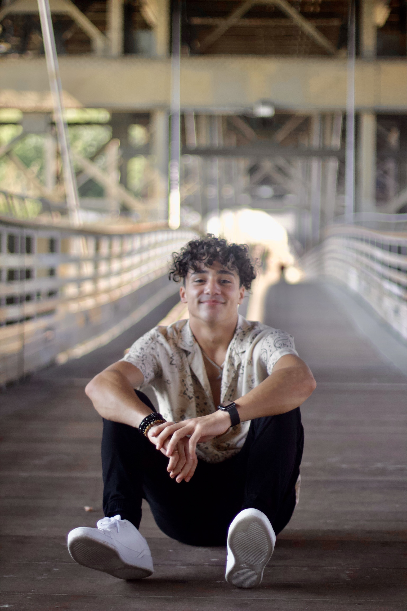

Ali Mortada
Contact Me

Summary:
I am a young, ambitious individual looking to advance the world using the unlimited capabilities of new technologies and Artificial Intelligence.
Education:
- University School of Milwaukee
GPA: 3.94
Graduation Year: 2022
- National History Day National Finalist (2018); "Retreat Don't Repeat" Black Hawk Down
- Independent Science Research (2019): Crickets: The relation between Substances and Electrical Stimulation
- Independent Science Research State Finalist (2020): The Golden Ratio: Social and Behavioral Influences
- Milwaukee Area Technical College
Emergency Medical Technician Course (5 Credits)
Completion Date: December 14, 2021
- Wayne State University
1st Semester GPA: 3.83
- Honors Student
- Neuroscience Major
- Pre-Med Track
- Coursera Online Classes
2023
Work Experience
- Tropical Smoothie Café (March - June 2023)
Volunteer Experience
- Iraq Volunteer Trip (December 2016)
- Fed and helped improve local orphanages
- Played soccer on the streets with orphaned children
- Learned to be grateful for what I have and sparked a flame in me that is adamant about helping those in need
- Dar-ul Hikmah Sunday School Arabic Teacher (2019-2021)
- Taught Arabic to lower school students using hands-on learning techniques
- Learned to understand various methods of effective teaching based on age and abilities
- Developed & implemented a unique curriculum in order to maximize retention and level of understanding
- Partnered with other teachers to create joint classes that fostered community and allowed older students to become role models for their younger counterparts
- USM Gardening (2020-2022)
- Planted, Watered, and grew various fruits and vegetables at the USM Garden with the objective of providing food to local homeless shelters
- Camp TAHA Counselor and Volunteer (2019-Present)
- Mentored a cabin full of youth -ages 10-15- by creating personal connections, holding camp values and traditions, and being a role model the kids look up to
- Served food and cleaned the dining halls after breakfast, lunch, and dinner
- Organized activities like Zip lining, Sports tournaments, Canoeing, and horseback riding
- The Muslim Group of USA and Canada (2019-Present)
- Serving food, maintaining security, and helping out with events each December
Skills
- Arabic: Proficient
- French: Intermediate
- Spanish: Beginner
- Licensed EMT
- Real Estate Investor
- E-Commerce
- Health & Excercise Mentor
- Organization
- Logical & Creative
- ...
Hobbies